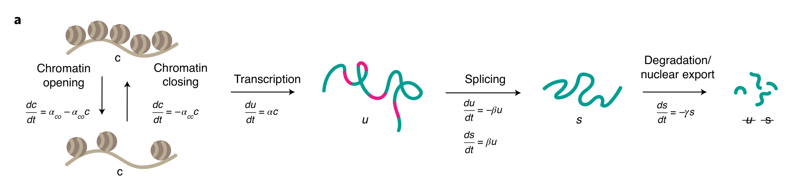
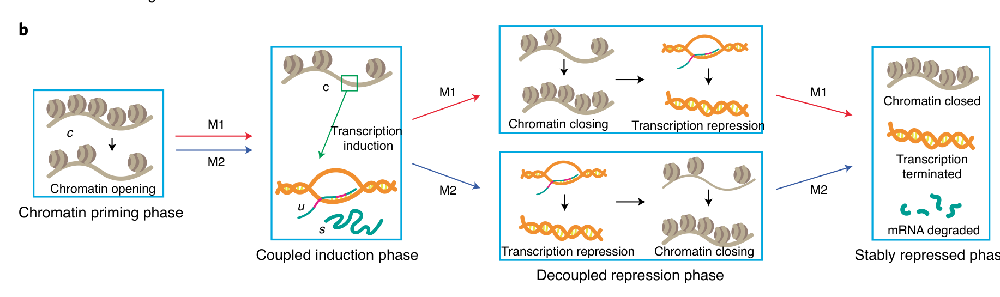
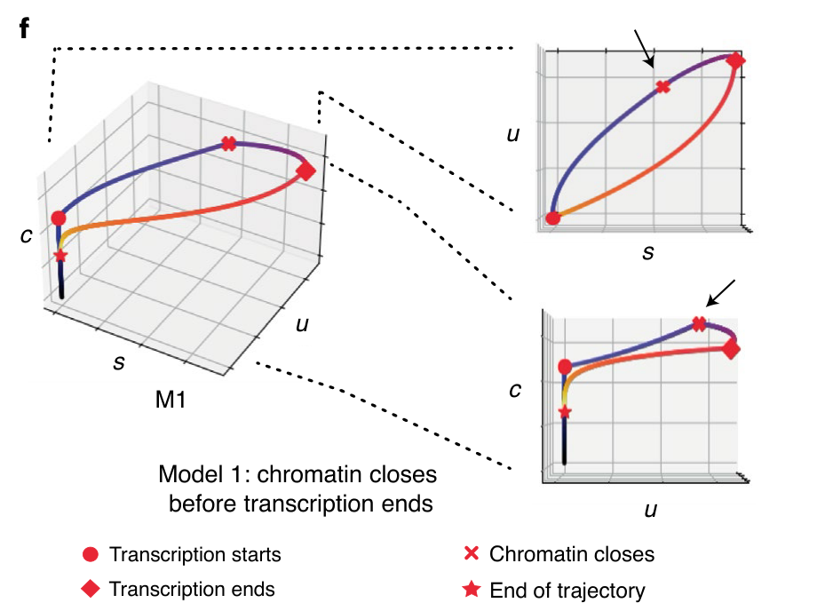
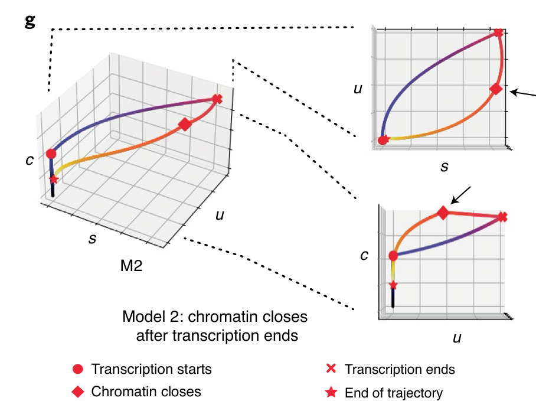
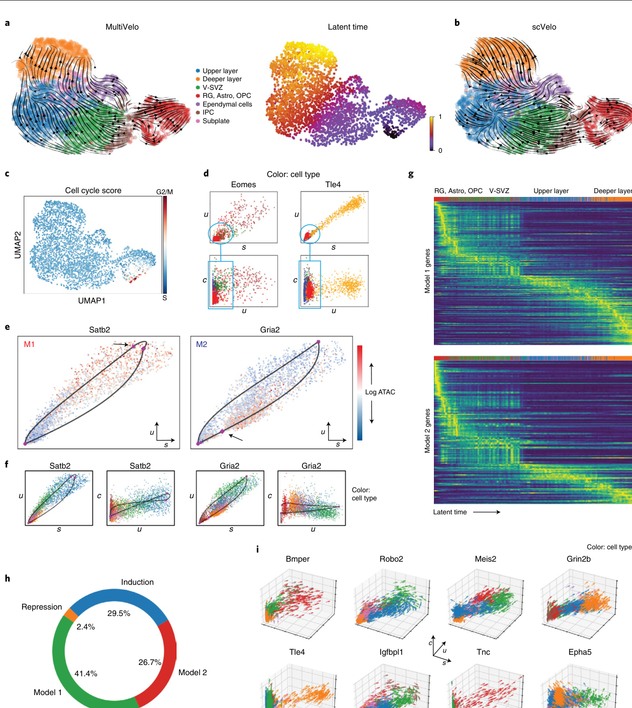
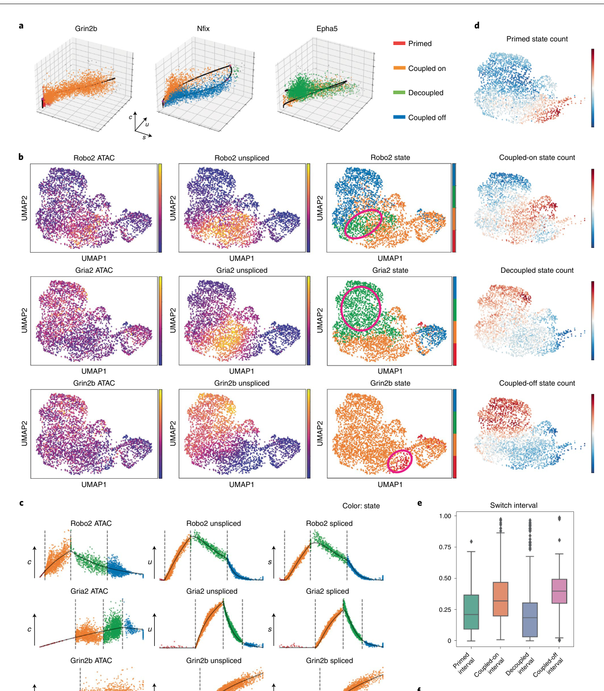
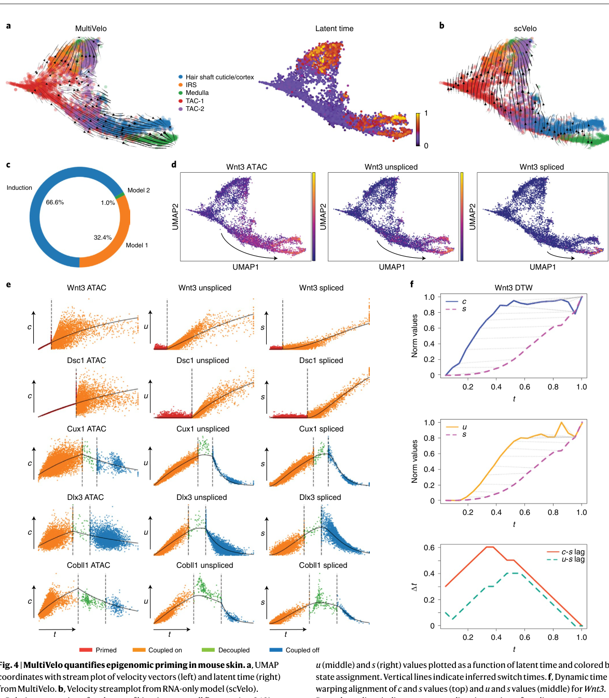
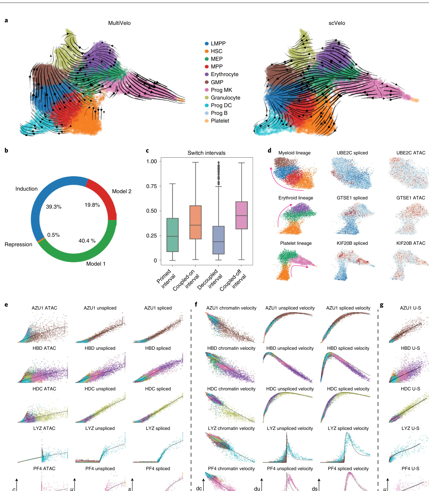
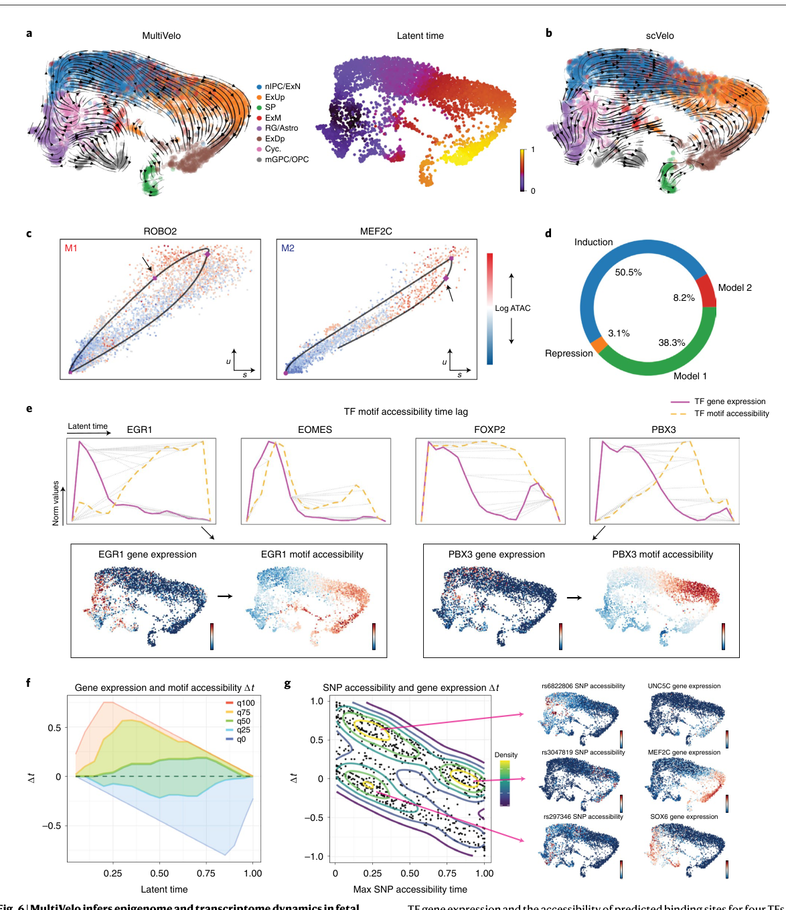

chromatin accessibility를 RNA velocity의 시간 변수로 통합한 multi-omic velocity model
Li, Virgilio, Collins, Welch · single-cell multi-omics / RNA velocity / epigenome-transcriptome dynamics
cell similarity 기반 ordering. 방향성과 속도 해석은 제한적.
unspliced/spliced RNA로 미래 transcriptional state를 예측.
chromatin accessibility `c(t)`를 transcription dynamics 안에 통합.

chromatin accessibility. transcription rate가 `c(t)`에 비례.
unspliced pre-mRNA. induction/repression의 빠른 RNA signal.
spliced mature RNA. cell state readout.
핵심 출력은 velocity vector, latent time, gene-specific switch time, primed/coupled/decoupled state, priming/decoupling interval이다.








mouse skin MultiVelo-Palantir Spearman correlation
mouse brain median primed interval
human HSPC high-quality cell count
fetal brain SNP timing analysis target count
model 1은 대부분 dataset에서 model 2보다 많고, induction-only gene도 큰 비율을 차지한다.
scVelo가 backflow 또는 hierarchy mismatch를 보인 사례에서 MultiVelo가 known trajectory와 더 맞는 방향성을 보였다.
cell fate prediction 개선은 여러 dataset에서 biological plausibility 중심으로 제시되며, 동일 metric 기반 benchmark는 제한적이다.
chromatin modifier, TF binding, looping 같은 과정은 rate constant와 switch time으로 압축된다.
time lag는 temporal association이며 CRISPR perturbation, allele-specific effect, reporter assay가 필요하다.
chromatin accessibility를 RNA velocity의 외부 feature가 아니라 transcription dynamics의 시간 변수로 통합했다.
full MultiVelo, RNA-only, chromatin-only, no-model2 ablation을 같은 metric으로 비교해야 한다.
priming/decoupled gene을 perturb-seq 또는 CRISPRi/a로 검증해 chromatin opening이 RNA induction을 유도하는지 확인한다.
좋은 후속 논문은 “time lag를 발견했다”에서 “그 lag가 causal regulatory step이다”로 넘어가야 한다.